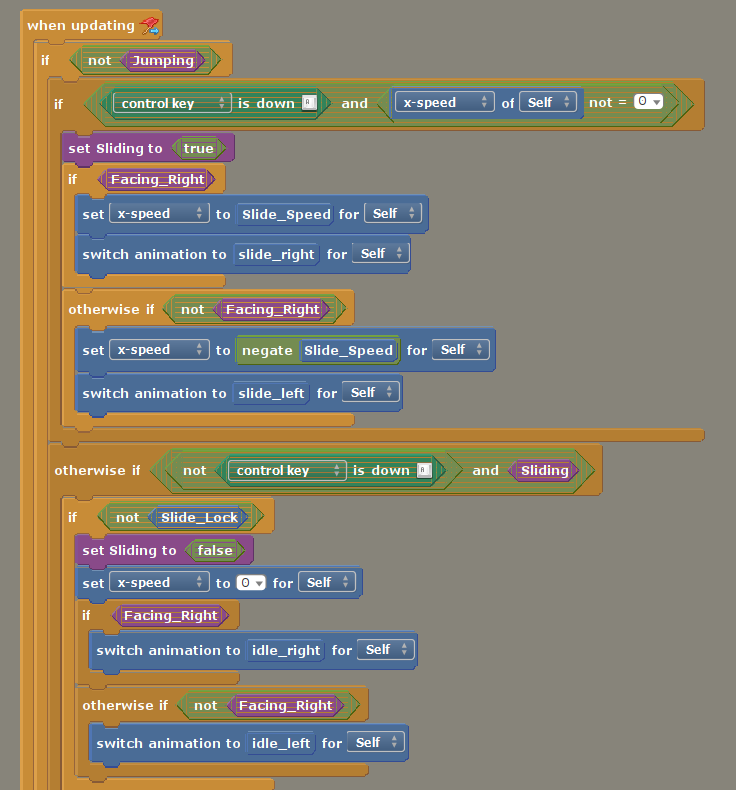
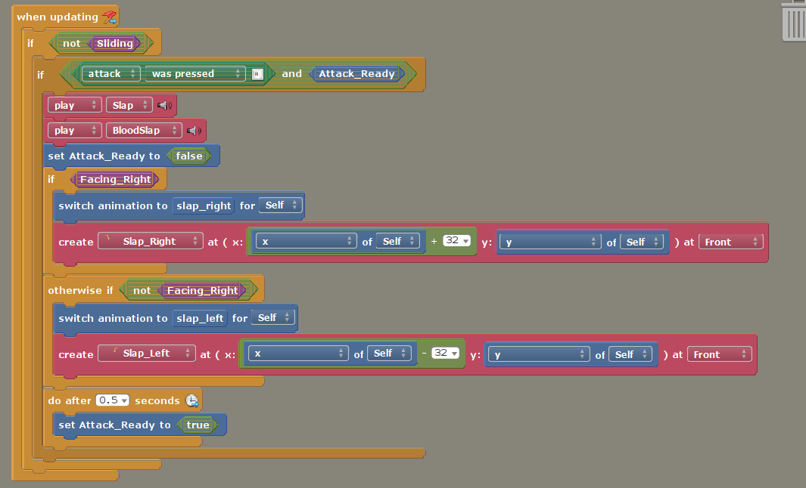

Description
A simple 3 stage platformer about a penguin finding his family on a snowy mountain with hunters roaming around...
Mechanics
Sliding
- A mechanic that allows the player to slide through obstacles with height lower than the player.
- Acts similarly to a sprint button, by holding down 'Ctrl' button, player can move at 1.5x the speed on the horizontal axis.
- Can be paired with Jump, jumping while sliding will perform a higher jump which makes jumping on top of higher obstacles possible.
- Player however cannot perform slapping in this state.
Gliding
- A simple mechanic that allows the player to glide while mid-air.
- Lowers fall speed to around half the original value.
- Player however cannot perform sliding in this state.
Slapping
- A basic melee attack that could kill any enemy with a slap!
- Has a fairly short range but can be performed in any state other than sliding.
- Has a small cooldown of 0.5 seconds to prevent spamming.

Implementation: Sliding
-
Before implementation begins, I first set a few essential conditions for the behavior which are:
- Sliding cannot be performed when Jumping(Airborne).
- Slapping cannot occur while Sliding.
- Sliding can only trigger when player speed is larger or smaller than 0.
- Player will not return from Sliding state while the player is stuck within a half block (A type of obstacle for to slide across.)
- Next I implement the conditions as shown in the image:
- In line 1, If not "Jumping", run the code.
- The disable slapping condition is done similarly in slapping event. If not "Sliding", run the code.
- In line 2, the code will only execute if the "Ctrl" button is held down, AND x-speed of self (Player) is any value other than 0.
- In line 11, the lower section where If not "Slide_lock" can be seen, lock slide is a boolean that is set to true whenever the player collides with aforementioned half-blocks.
- After that I set a global boolean known as Sliding to true in line 3.
- Next is to check if the player is facing left or right with another global boolean known as Facing_Right in line 4.
- Based on the direction facing, I then set x-speed to a predetermined slide speed as well as switching them to their respective animations, negating the speed if it's the opposite.
Implementation: Gliding
- Similar to the implementation of sliding, I first identify the conditions:
- Gliding can only be performed while player is in mid-air.
- Player can switch glide directions.
- Then comes the implementation of conditions:
- In line 1, the boolean known as Glide_Allow can be seen, it is set to true if the player's center Y position deviates from the recorded Y center position when player is on the ground.
- This is done by adding an additional If statement within walk event, where it checks if the player is "Gliding" or not and disables the normal walking code.
- The reducing of the fall speed itself is simple, just set the fall speed to a new fall speed that is half of the normal fall speed.

Implementation: Slapping
- Conditions for slapping:
- Cannot be performed while Sliding.
- Has a cooldown of 0.5 seconds.
- The implementation of the conditions:
- In line 1, the Sliding global boolean is checked to ensure that the player is not Sliding before executing anything.
- In line 2, a local boolean known as Attack_Ready is checked before running the code, it is set to be true by default and once the code within is executed, it is set to false, before resetting it to True again after 0.5 seconds, the aforementioned cooldown.
- The slapping action is itself is also very simple, I just create a seperate actor that is rectangular hitbox right beside the player based on the direction it is facing.